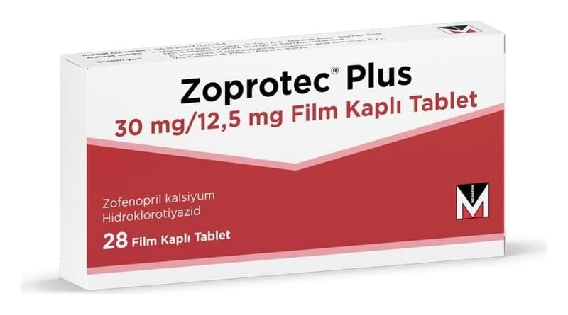

Zoprotec Plus 30 mg/12.5 mg Film Kaplı Tablet, 28 Adet

Ne için kullanılır
KT · Bölüm 1ZOPROTEC PLUS etkin madde olarak 30 mg zofenopril kalsiyum ve 12,5 mg hidroklorotiyazid içerir.
Zofenopril kalsiyum anjiyotensin dönüştürücü enzim (ADE) inhibitörleri adı verilen kan basıncını azaltıcı ilaçlar grubuna dahil kalp ve damar sistemine etki eden bir ilaçtır.
Hidroklorotiyazid ürettiğiniz idrar miktarını arttırarak etki eden bir idrar söktürücüdür (diüretik).
ZOPROTEC PLUS hafif-orta derecede yüksek kan basıncınızı (hipertansiyon) tedavi etmek için verilir.
ZOPROTEC PLUS 28 ve 84 film tabletlik ambalajlar halinde kullanıma sunulmuştur. Bir yüzünde kırma çentiği bulunan tabletler pastel-kırmızı, yuvarlak ve hafif bi-konvekstir. Kırma çentiği, tableti eşit dozlara bölmek için değil, yutmayı kolaylaştırmak amacıyla kırılmasını sağlamak içindir.